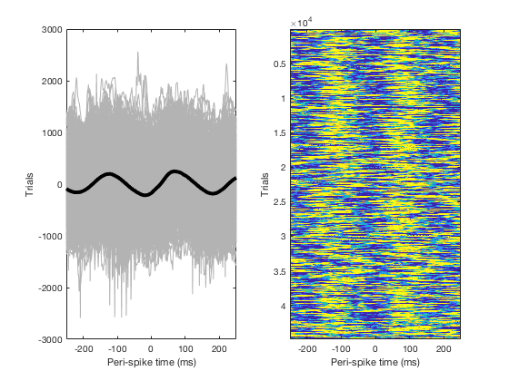

The code associated with the educational book: Cohen MX (2017) MATLAB for Brain and Cognitive Scientists :1-576 is freely available at Mike X Cohen's web site (after you follow the below link, scroll down until you see the MATLAB for Brain and Cognitive Scientists title) which also contains links to where the book may be purchased at amazon.com or MIT Press: http://mikexcohen.com/book/index.html The code (see below for why it generates several errors) is specifically at this link: http://mikexcohen.com/book/Cohen_MBCS_code.zip These pages were accessed on July 26th, 2017. "Using the code without following the book may lead to confusion, incorrect data analyses, and misinterpretations of results. Note that the code is meant to accompany the book, and is thus best understood by going through the code while reading the book. Mike X Cohen assumes no responsibility for inappropriate or incorrect use of this code. " Running the chapter23.m code, for example, produces the following image: and then generates an error message (on purpose) which is an exercise for the student to fix! After the code is fixed, eight more figures are generated, for example: 